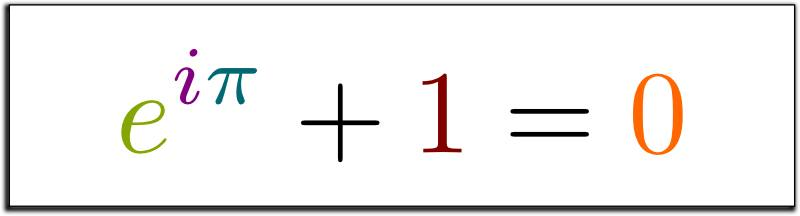

a few observations and remarks :
- you can learn 999 different methods to solve a single problem. when you apply them, all of them may fail with varying degree.
- after dying a little inside with every failure, finally you get mad and INVENT your OWN method :p
- not every problem is the same, unique problems need unique approach.
- you didn't fail with 999 different methods, you gained new insights by applying each method.
- Invention is 'often' just a linear combination of insights gained through failures :D
Monirul Islam Tahir
Contact
Expositions
Links
Link Saver